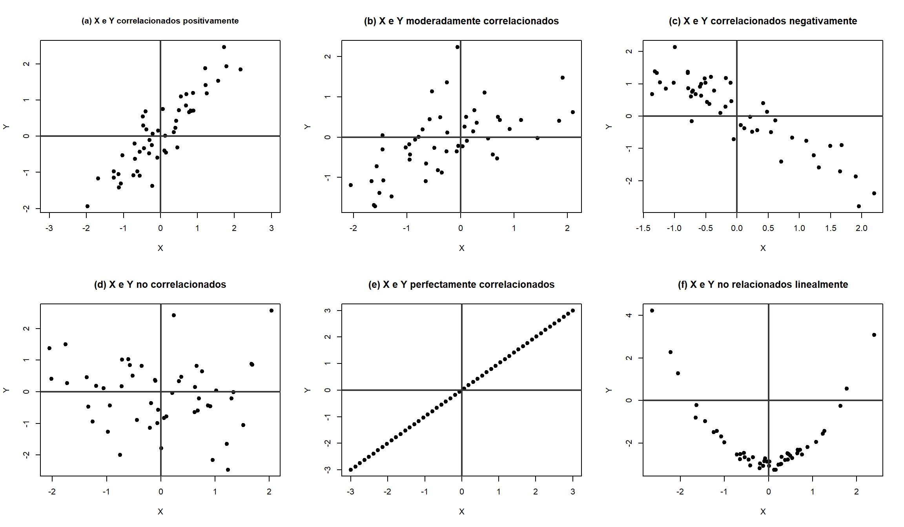

3 Algunas nociones de Estadística
La estadística, como campo del conocimiento, tiene su origen en las civilizaciones antiguas que utilizaban técnicas rudimentarias para llevar registros de personas, bienes y otros recursos. Las primeras formas de estadística se pueden rastrear hasta el antiguo Egipto y Mesopotamia, donde se empleaban métodos básicos para el censo y la administración de recursos.
El término “estadística” proviene del latín “status”, que significa “estado” o “condición”. Aunque la estadística como disciplina tiene sus raíces en el trabajo de varios eruditos, fue el alemán Gottfried Achenwall quien acuñó el término “estadística” en el siglo XVIII. Según Achenwall en (Pütter y Achenwall 1750) utilizó la palabra “Statistik” donde definió la estadística como el estudio sistemático de datos sobre el estado (entendido como el Estado o gobierno), centrado en la recopilación y análisis de datos sobre las condiciones económicas, sociales y políticas.
En esta sección se presentan conceptos fundamentales de la estadística, comenzando con las medidas de tendencia central, dispersión y localización, interpretadas a través del valor esperado de una variable aleatoria. Estos conceptos, esenciales para describir el comportamiento de una distribución, serán posteriormente estimados mediante el análisis de muestras.
En estadística, una población se refiere al conjunto completo de observaciones que son de interés para un estudio o investigación. Sin embargo, en muchos casos, es imposible o poco práctico obtener datos de cada elemento de la población. Lo que lleva a definir el concepto de una muestra.
Definición 3.1 (Muestra) Una muestra es una porción o subconjunto de una población que se selecciona para ser estudiada, con el objetivo de obtener información o realizar inferencias sobre toda la población.
Una muestra puede ser seleccionada de forma aleatoria o no aleatoria. En una muestra aleatoria, todos los elementos de la población tienen la misma probabilidad de ser elegidos. En cambio, en una muestra no aleatoria, algunos elementos pueden no tener posibilidad de ser incluidos.
3.0.0.1 Muestra aleatoria
Sean \(X_1,\dots, X_n\) variables aleatorias independientes, cada una con la misma distribución de probabilidad conjunta \(f(x)\). Entonces se define \(X_1,\dots, X_n\) como una muestra aleatoria con su distribución de probabilidad conjunta como
\[ f(x_1,x_2,\cdot, x_n) = f(x_1)f(x_2) \dots f(x_n) \]
Las técnicas para generalizar desde una muestra hasta una población se congregan dentro de la rama de la disciplina llamada estadística inferencial.
Para que las inferencias que hacemos sobre una población a partir de una muestra sean válidas, es crucial que la muestra sea representativa de esa población. El sesgo en una muestra ocurre cuando ésta no refleja adecuadamente las características del conjunto total, lo que puede llevar a conclusiones incorrectas. Para evitar este problema, es esencial seleccionar una muestra aleatoria, ya que este método garantiza que todos los elementos de la población tengan la misma probabilidad de ser elegidos, asegurando la independencia de las observaciones y minimizando el riesgo de sesgo.
Definición 3.2 (Estadístico) Un estadístico es cualquier cantidad cuyo valor puede ser calculado a partir de datos muestrales. Antes de obtener los datos, existe incertidumbre sobre qué valor de cualquier estadístico particular resultará. Por consiguiente, un estadístico es una variable aleatoria y será denotada por una letra mayúscula; se utiliza una letra minúscula para representar el valor calculado u observado del estadístico.
Por ejemplo, la media muestral, considerada como estadístico (antes de seleccionar una muestra o realizar un experimento), está denotada por \(\bar{X}\); el valor calculado de este estadístico es \(\mu\).
El propósito al seleccionar muestras aleatorias consiste en obtener información acerca de los parámetros desconocidos de la población. A partir de estas muestras aleatorias se obtiene un único valor que sirve como una estimación puntual. Se denotará este parámetro puntual con la letra griega \(\theta\).
3.1 Medidas de tendencia central
Definición 3.3 (Media) Sea \(X\) una variable aleatoria discreta con distribución de probabilidad \(f_X(x)\). La media o valor esperado de \(X\), se denota por \(\mu\) o \(E[X]\), y se define como, \[\mu = E[X] = \sum x_i f_x (x_i). \] Con función de probabilidad \(f_X(x_i)\) .
Para una variable aleatoria continua \(X\), con función de densidad \(f(x)\), se define como, \[\mu = \mathrm E[X]=\int_{-\infty}^\infty x f(x)dx .\]
Definición 3.4 (Cuantil) Para una variable aleatoria \(X\), o su distribución acumulada correspondiente, se denomina cuantil \(q-\text{ésimo}\), simbolizado como \(\xi_q\), al valor mínimo \(\xi\) que satisface la condición \(F_x(\xi_q) \geq q\).
Definición 3.5 (Mediana) La mediana de una variable aleatoria \(X\), notada como \(\text{med}_X\) o \(\xi_{0.5}\) , corresponde al cuantil \(0.5\).
Ejemplo 3.1
Mediante el muestreo, se busca obtener algunos estimadores de ciertos estadísticos poblacionales, como la media y la varianza, a través de la media muestral y la varianza muestral. Estos estimadores se calculan a partir de los datos de una muestra y sirven para hacer inferencias sobre la población.
Definición 3.6 (Media muestral) Sean \(x_1,x_2, \dots, x_n\) muestras aleatorias. Se define la media muestral como,
\[ \bar{X} =\frac{1}{n}\sum_{i=1}^n x_i. \]
Definición 3.7 (Mediana muestral) Sea \(X\) una muestra aleatoria de tamaño \(n\) y \(x_i\) los valores de los datos ordenados de menor a mayor. La mediana \(\tilde{x}\) es el valor que satisface: \[ \tilde{x}= \begin{cases} x_{\frac {(n+1)}{2}} & \text{ si } n \text{ es par} ,\\ \frac{1}{2} \left(x_{\frac{n}{2}} + x_{\frac{n}{2} +1} \right) & \text{ si } n \text{ es impar} \end{cases}. \tag{3.1}\]
Ejemplo 3.2
3.2 Medidas de localización
La varianza de una variable aleatoria es una medida de dispersión que refleja, en promedio, qué tan alejados están los valores de la variable respecto a su media.
Definición 3.8 (Varianza) La varianza de una variable aleatoria \(X\), se denota por \(\mathrm{Var}(X)\) o \(\sigma_x^2\), se define como la siguiente esperanza, si está existe, \[ \mathrm{Var}[X]= (E[X]-E[X])^2.\]
Cuando \(X\) es una variable aleatoria discreta con función de probabilidad \(f(x)\) y esperanza finita \(\mu\), entonces la varianza se define por, \[ \mathrm{Var}[X]= \sum_i (x_i - \mu)^2.\]
Si \(X\) es una variable aleatoria absolutamente continua con función de probabilidad \(f(x)\) y esperanza finita \(\mu\), entonces la varianza se define para los puntos \(x= \{x_1,x_2,\dots x_n\}\) por,
\[\mathrm{Var}[X]= \int_{-\infty}^\infty (x-\mu)^2 f(x) dx.\]
Observación. Para calcular la varianza se necesita conocer primero la esperanza.
El siguiente teorema presenta algunas propiedades que cumple la varianza.
Teorema 3.1 Sean \(X\) una variable aleatoria con varianza finita, y sea \(c \in \mathbb{R}\) . Entonces:
- \(\mathrm{Var}[X] \geq 0.\)
- \(\mathrm{Var}[c] = 0.\)
- \(\mathrm{Var}[cX] = c^2 \mathrm{Var}[X].\)
- \(\mathrm{Var}[X+c] = \mathrm{Var}[X].\)
- \(\mathrm{Var}[X] = 0 \ \ \text{si y solo si} \ \ P(X= E[X])=1 .\)
Prueba. Ver (Castañeda, Arunachalam, y Dharmaraja 2012).
Definición 3.9 (Desviación estándar) A la raíz cuadrada positiva de \(\mathrm{Var}[X]\) se le llama desviación estándar, y se le denota naturalmente por \(\sigma_X\) o por \(+ \sqrt{\mathrm{Var}[X]}\).
Definición 3.10 (Varianza muestral) Sean \(X_1,X_2, \dots, X_n\) muestras aleatorias. Se define la varianza muestral para \(n>1\), \[ S_n^2=S^2=\frac{1}{n-1}\sum_{i=1}^n (X_i-\bar{X})^2 .\]
Observación. La media y la varianza muestral tienen la característica de ser estimadores insesgados para la media y la varianza, respectivamente, de una distribución cualquiera.
Definición 3.11 (Desviación estándar muestral) La desviación estándar muestral es la raíz cuadrada de la varianza muestral. Y se denota por \[s = \sqrt{s_n^2}. \]
Observación. La varianza muestral es un estimador insesgado de la varianza, ya que su valor esperado coincide con la varianza. Sin embargo, la desviación estándar muestral no es un estimador insesgado de la desviación estándar poblacional. Aunque se calcula a partir de un estimador insesgado (la varianza muestral), al tomar la raíz cuadrada se introduce un sesgo, especialmente notable en muestras pequeñas. Existen métodos adicionales para corregir parcialmente este sesgo en la desviación estándar, pero suelen ser más complejos y dependen del tamaño de la muestra.
La distribución empírica es una representación de los datos observados en la muestra, organizada para mostrar cómo se distribuyen los valores de una variable en dicha muestra. Esta distribución se basa exclusivamente en los datos reales recopilados, sin asumir ningún modelo teórico o de probabilidad. Es una forma de visualizar cómo se comportan los datos en la muestra y ayuda a calcular los estimadores muestrales.
Sin embargo, los estimadores muestrales no son valores fijos; varían de una muestra a otra. La distribución muestral de un estadístico (como la media muestral o la varianza muestral) describe cómo se distribuyen los valores del estadístico en múltiples muestras extraídas de la misma población. Esta distribución muestral depende de varios factores, como la distribución de la población, el tamaño de las muestras y el método de selección de las muestras.
Los estimadores muestrales permiten inferir información sobre la población basándonos en la muestra, y a continuación se presentan los principales estimadores muestrales como la media muestral y la varianza muestral, que son ejemplos claves en la estimación de parámetros poblacionales.
3.3 Medidas de dispersión de una muestra
3.3.1 Rango muestral.
Sea \(X\) una variable aleatoria y \(x_1 , \dots , x_n\) una muestra de los valores observados de \(X\), el rango muestral \(R\) se define como: \[ R = x_\mathrm{max} - x_\mathrm{min}, \] donde \(x_\mathrm{max}\) es el valor máximo de la muestra y \(x_\mathrm{min}\) es el valor mínimo.
Los datos multivariados se refieren a conjuntos de datos que incluyen más de una variable aleatoria. Por ello, se definen a continuación algunas propiedades que relacionan dos o mas variables aleatorias.
La covarianza, \(\gamma_{XY}\), y la correlación, \(\rho_{XY}\), son parámetros que miden la relación lineal entre dos variables. Se definen a continuación.
Definición 3.12 (Covarianza) Para dos variables aleatorias \(X\) y \(Y\) con medias \(\mu_X = E[X]\) y \(\mu_Y= E[Y]\), la covarianza de \(X\) e \(Y\) se denota por \(\mathrm{Cov}[X,Y]\), se define como: \[ \gamma_{XY}=\mathrm E[(X-\mu_X)(Y-\mu_Y)]. \tag{3.2}\] siempre que las esperanzas \(E[X]\), \(E[Y]\) y \(E[XY]\) son finitas.
3.4 Correlación
Para dos variables aleatorias \(X\) y \(Y\), la covarianza de notada por \(\rho_{XY}\) se define por, \[ \rho_{XY} = \dfrac{\gamma_{XY}}{\sigma_X \sigma_Y}. \tag{3.3}\] donde es la a covarianza entre \(X\) y \(Y\) definido en (3.2), \(\sigma_X\) es la desviación estándar de la variable \(X\) y \(\sigma_Y\) desviación estándar de la variable \(Y\).
La covarianza es el valor esperado o promedio teórico del producto cruzado. Representa cómo dos variables se relacionan. Sin embargo, interpretar su magnitud puede es complicado, ya que la covarianza depende de las unidades de las variables involucradas.
Para hacer la interpretación más sencilla, se utiliza la correlación, que es una versión estandarizada de la covarianza. El coeficiente de correlación tiene la ventaja de ser adimensional y siempre toma valores \(-1 \leq \rho_{XY} \leq 1,\) independientemente de las unidades de las variables. Esto facilita la comparación y comprensión de la relación entre dos variables aleatorias \(X\) e \(Y\).
Definición 3.13 (Coeficiente de correlación) Dado un conjunto de datos bivariados, el coeficiente de correlación de muestra, denotado por \(r_{XY},\) se define por,
\[ r_{XY} = \frac{ \sum_{i=1}^{n} (X_i - \overline{X})(Y_i - \overline{Y}) }{\sqrt{\sum_{i=1}^{n} (X_i - \overline{X})^2} \cdot \sqrt{\sum_{i=1}^{n} (Y_i - \overline{Y})^2}} \ \ . \tag{3.4}\]
Los valores de \(r_{X,Y}\) comparten la propiedad con el coeficiente de correlación de población, \(-1 \leq r_{XY} \leq 1.\)
La correlación puede ser positiva, negativa o nula:
Correlación positiva: A medida que una variable aumenta, la otra variable también tiende a aumentar.
Correlación negativa: A medida que una variable aumenta, la otra variable tiende a disminuir.
Correlación nula: No hay una relación lineal evidente entre las dos variables.
Un diagrama de dispersión es una representación gráfica en la que pares ordenados se muestran como puntos en un plano cartesiano \((x_1,y_2),(x_2,y_2),\dots, (x_n,x_n).\) La Figura 3.1 ilustra varios ejemplos de diagramas de dispersión para diferentes pares de variables. En la Figura 3.1 a) se observa una fuerte correlación lineal positiva entre a medida que aumenta, tiende a aumentar también, y viceversa.
Los datos de la Figura 3.1 a) sugieren una correlación positiva moderada entre \(X\) e \(Y\), similar a la relación observada en la Figura 3.1 a). Sin embargo, a diferencia de la correlación más fuerte en la Figura 3.1 a), en este caso, para un valor dado de \(x\), existe una mayor dispersión en los valores plausibles de \(y\), lo que indica que la relación entre las variables es menos predecible y presenta mayor variabilidad.
A diferencia de las Figura 3.1 a) y Figura 3.1 b), la Figura 3.1 c) presenta un ejemplo de una correlación negativa notablemente fuerte, donde los valores altos de \(X\) se asocian con valores bajos de \(Y\), y viceversa. Se observa que la mayoría de los puntos se encuentran en los cuadrantes superior izquierdo e inferior derecho, lo que refuerza la relación inversa entre ambas variables. La Figura 3.1 d) muestra un ejemplo en el que no parece haber correlación detectable entre \(X\) e \(Y\).
La Figura 3.1 e) muestra un ejemplo de una relación lineal positiva, donde todos los puntos se alinean exactamente sobre una línea recta. Por último, la Figura 3.1 f) presenta una situación distinta en la que existe una relación entre \(X\) e \(Y\), pero no es lineal. En este caso, los valores de Y tienden a ser altos cuando los valores de \(X\) son extremos, ya sea muy bajos o muy altos. Sin embargo, para valores de X cercanos al centro del rango (es decir, alrededor de cero), los valores de Y tienden a ser bajos.
3.5 Estandarización
La estandarización de datos en estadística es un proceso esencial para comparar y analizar datos provenientes de diferentes fuentes o escalas. Este procedimiento transforma los datos a una escala común sin distorsionar las diferencias en los rangos de valores. La estandarización de una variable aleatoria es el proceso de transformar una variable aleatoria \(X\) con media \(\mu\) y desviación estándar \(\sigma\) en una nueva variable aleatoria \(Z\) que tenga una media de 0 y una desviación estándar de 1. El proceso de estandarización se realiza utilizando la siguiente fórmula:
\[ Z = \dfrac{X - \mu}{\sigma} . \tag{3.5}\]
El proceso usando (3.5) es particularmente útil en varias aplicaciones estadísticas y de aprendizaje automático. En el ámbito del aprendizaje automático, existen algoritmos de clasificación y de regresión donde asumen que los datos están estandarizados. Esto es importante porque la mayoría de estos algoritmos utilizan distancias euclidianas entre puntos en su procesamiento. Si los datos no están estandarizados, las características con escalas más grandes pueden dominar la medida de distancia y, en consecuencia, podría negativamente el rendimiento del modelo.
3.6 Normalización
La normalización de datos en estadística es un proceso que ajusta los valores de diferentes variables a una escala común, facilitando la comparación directa y el análisis adecuado. Este procedimiento es relevante cuando se trabaja con datos que tienen diferentes unidades o rangos, ya que permite que todas las variables contribuyan equitativamente en análisis y modelos estadísticos.
Existen varios métodos de normalización, pero uno de los más comunes es la normalización min-max. Este método transforma los valores de una variable para que se ubiquen dentro de un rango específico, típicamente entre 0 y 1. La fórmula para la normalización min-max es la siguiente:
\[ X_i^\prime = \dfrac{X_i- X_{min}}{X_{\max} - X_{\min}}, \ \ \ \ \ \ \ \ i=1,...,n. \tag{3.6}\]
La normalización min-max en (3.6) es útil en aplicaciones donde se necesita preservar las relaciones entre los valores originales, como en algoritmos de aprendizaje automático que utilizan distancias entre datos. Otro método de normalización es la normalización z-score, también conocida como estandarización.
3.7 Entorno para el manejo de recursos computacionales en Ciencia de Datos
La computación en la nube es un entorno basado en servicios de internet que permite acceder a software, datos y servicios desde cualquier lugar, siempre se tenga un dispositivo con conexión a la web. Debido a los altos recursos que ofrece el uso de esta tecnología, destaca en particular Google Colab.
Google Colab, también conocido como Colaboratory, es un entorno gratuito basado en Jupyter Notebook que se ejecuta en los servidores de Google en la nube. No requiere instalación ni configuración de Python. Además, ofrece acceso gratuito a hardware como CPU, GPU y TPU. El código se puede compartir de manera similar a Google Drive.
Para acceder a Google Colab, ingresa a https://colab.research.google.com/ con una cuenta de gmail.